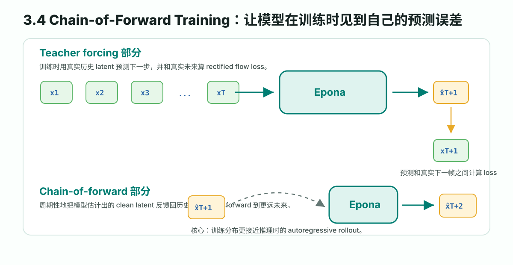
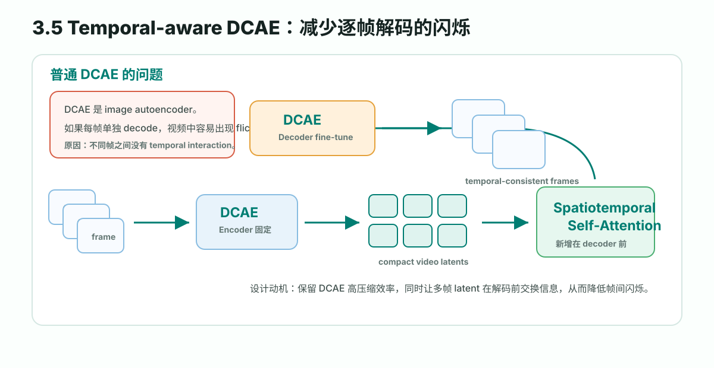

一句话总结
Epona 不是一次性生成固定长度未来视频，而是用 causal temporal latent 一步步往后推进， 每一步再用 diffusion/rectified flow 生成下一帧图像 latent 和未来轨迹。
Figure 3：为什么要重新定义 world model
论文把已有方法分成两类：GPT-style autoregressive 方法和 video diffusion 方法。前者时间灵活， 但把图像离散成 tokens 会损失空间细节；后者画质好，但往往一次性生成固定长度未来视频， 长时预测要反复调用，容易出现 error accumulation 和 content drift。
离散 token 自回归
优点是长度灵活；缺点是 quantization 损伤高频细节，token-by-token 建模削弱空间相关性。
固定窗口联合生成
优点是视觉质量高；缺点是通常生成固定 n 帧，不天然支持任意长度 rollout。
连续 latent 自回归 + diffusion
在 continuous latent space 中逐步预测下一帧，并用 diffusion 保留细粒度视觉质量。
因果时间建模
把 future prediction 写成局部条件分布，而不是一整段固定长度视频的全局联合分布。
Video diffusion: p({O_{T+i}}_{i=1}^n, {O_t, a_t}_{t=1}^T)
Epona: p(O_{T+1} | {O_t, a_{t-1→t}}_{t=1}^T, a_{T→T+1})Figure 2：Epona 总体结构
Epona 的输入是历史 condition frames 和 historical trajectories。图像先经 DCAE Encoder 得到连续 latents
{Z_t}，历史轨迹用 a_{t1→t2}=(Δθ, Δx, Δy) 表示。MST 把视觉 latent 和动作序列融合成 compact latent F。
历史图像 {O_t} + 历史轨迹 {a_{t-1→t}}
↓
DCAE Encoder + MST
↓
compact latent F
↙ ↘
TrajDiT VisDiT
未来 3 秒轨迹 动作条件下一帧图像这个模块化设计很关键：如果要做视频仿真，就用 MST + VisDiT；如果只做实时规划，可以关掉视频分支，只跑 MST + TrajDiT。
MST：Multimodal Spatiotemporal Transformer
MST 输入视觉 latent Z ∈ R^{B×T×L×C} 和动作 a ∈ R^{B×T×3}。
它把它们投影到 embedding space 后沿空间维拼接，得到：
E ∈ R^{B×T×(L+3)×D}
然后交替使用 causal temporal attention 和 multimodal spatial attention。前者保证时间因果结构，
后者融合视觉场景和历史动作。最后用最后一帧 embedding 得到 compact latent F，供两个 DiT 分支使用。
TrajDiT 与 VisDiT
TrajDiT
TrajDiT 是轨迹规划扩散模型。训练时给未来轨迹加噪，让模型预测 rectified flow velocity：
L_traj = E[ || v_traj(a_t, t) - (a - ε) ||² ]推理时从高斯噪声 denoise 出未来轨迹。
VisDiT
VisDiT 生成下一帧图像 latent Z_{T+1}，并额外接收动作控制 a_{T→T+1}。
这使它能做 trajectory-controlled video generation。
L = L_traj + L_vis3.4 Chain-of-Forward Training

普通 teacher forcing 训练时模型看真实历史帧；推理时模型却要看自己生成的历史帧。这种训练-推理分布差异会导致误差累计。 Epona 的做法是：周期性地进行多次 forward，把 self-predicted frames/latents 用作后续条件，让模型学会在有噪声的历史上继续预测。
为了效率，作者没有完整跑多步 diffusion sampling，而是用 rectified flow 的 velocity 一步估计 clean latent：
x̂_(0) = x_(t) + t v_Θ(x_(t), t)Chain-of-forward 不是消灭 autoregressive error accumulation，而是降低 teacher forcing 与 autoregressive sampling 的 domain gap， 让模型对自身预测误差更鲁棒。
3.5 Temporal-aware DCAE Decoder

Epona 使用 DCAE 编码图像。DCAE 相比普通 autoencoder 压缩更强，可以把 latent token 数减少约 16 倍， 从而节省显存并支持更长历史上下文。但 DCAE 原本是 image autoencoder，逐帧 decode 视频时缺少时间交互，容易 flickering。
作者的解决方式是在 DCAE decoder 前添加 spatiotemporal self-attention layers，同时保持 encoder 固定， 尽量复用预训练参数，只让解码端具备帧间交互能力。
你的问题整理
1. “不能很好支持 variable-length long-range prediction” 是误差累计吗？
是其中一个核心原因。固定长度 video diffusion 如果想生成更长未来，通常要反复调用模型； 一旦前一段生成里有小错误，后一段会基于这个错误继续生成，出现 error accumulation 和 content drift。
2. Epona 怎么解决？
它把固定长度联合生成改成 continuous latent 中的 autoregressive next-frame prediction， 并用 chain-of-forward 训练让模型适应自身预测作为条件。
3. 这样不也会误差累计吗？
会。只要是 autoregressive，就仍可能误差累计。Epona 的贡献是缓解，而不是从理论上消灭： latent-space temporal modeling 降低像素级错误传播，spatiotemporal decoupling 降低任务难度， chain-of-forward 让模型训练时见过不完美历史。
对 AD World Model 的启发
- 长时 world model 不一定要一次性生成固定长度视频，可以转成 sequential local prediction。
- 视频生成和轨迹规划可以共享 temporal latent，但用不同 DiT 分支优化。
- 训练时必须处理 exposure bias，否则长时 rollout 很容易只在短窗口内好看。
- “解决误差累计”这类表述要谨慎，最好写成“mitigate autoregressive drift”。